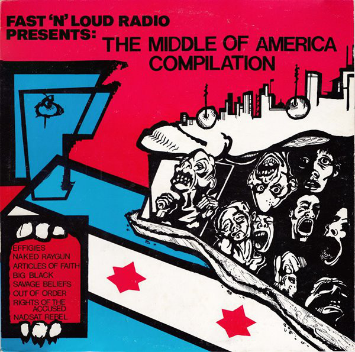
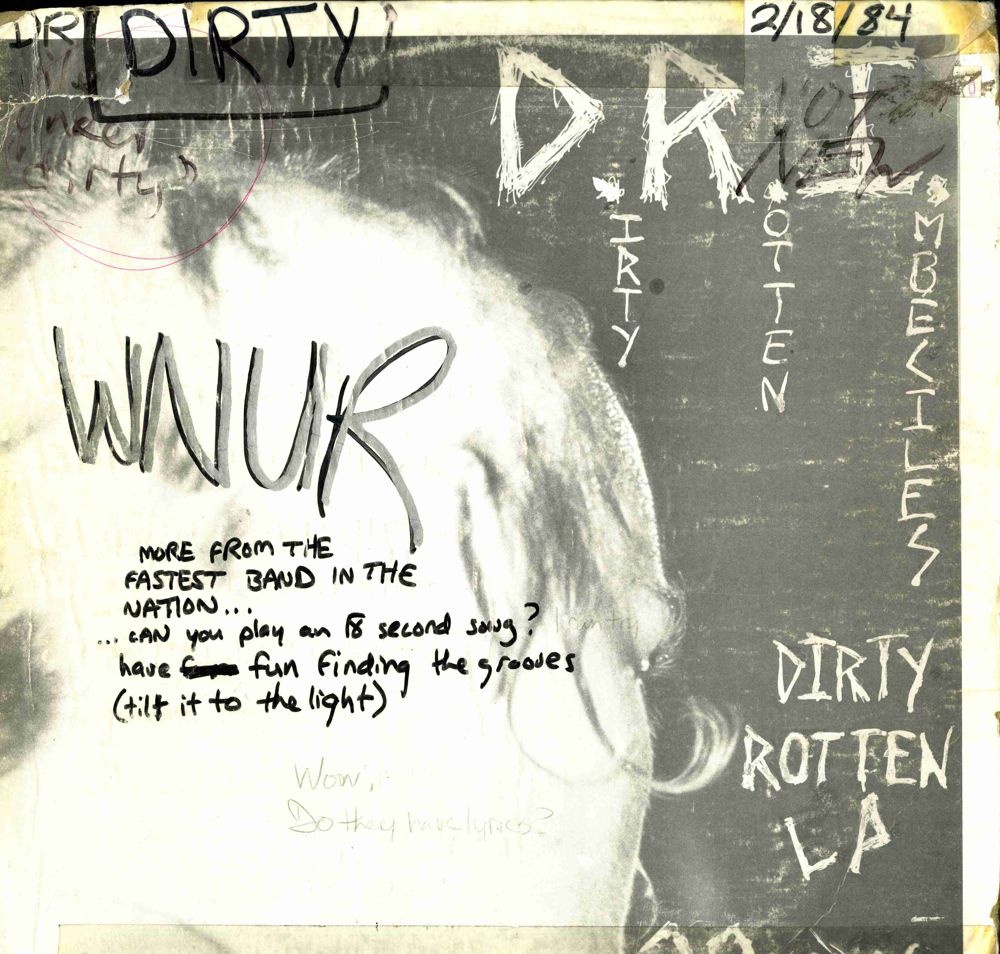
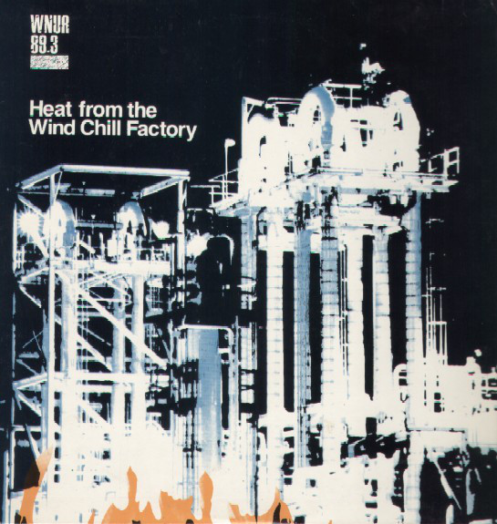
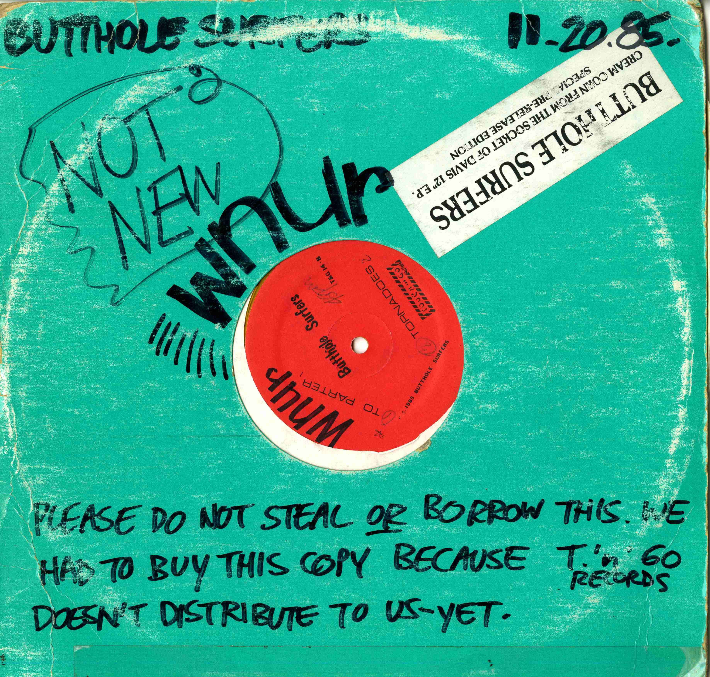
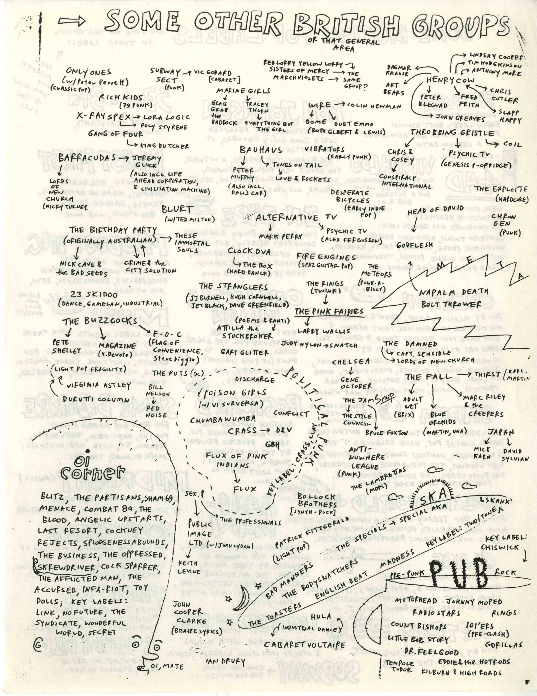

Amid the more pop-sensible music of the early 80s highlighted above there were musical activities further from the mainstream happening in cities across the US. These activities were noticed and documented outside of rock show and by DJs acting independently on the “Handpicked” shows Independence Day, Ready Steady Go and Fast n’ Loud featuring American underground, British underground and hardcore rock, respectively. These shows, curated by the most obsessive underground music fans of the Rock Show, did a great deal to influence the direction of Rock Show itself. As Doug Conn, the main DJ of Fast n’ Loud explains: “if somebody listened to my show or found out about it themselves, they would take one of the records and just play it on their rock show so [hardcore] definitely started creeping in with more and more people.”
One of the more legendary episodes in the developing underground-focused lean of WNUR is the Middle of America compilation released in 1984. One of three official releases WNUR has put together over time, Middle of America, assembled by Doug Conn highlighted the hardcore punk scene in Chicago and was a reflection of the local scene Fast n’ Loud played a large role in supporting: “If you were in your basement trying to put together a band and you could put a tape together, we were one of the places that you would hopefully send it.” Highlighting the ways the national scene seeped into Chicago and DJs at WNUR at the time, it’s interesting to note Doug got the idea for the compilation from a trip to California: “I went up to Berkeley, cause I have relatives up in San Francisco, and that’s where Maximumrocknroll Radio was, which would be called a podcast now, but it was just a tape system back then where people would get copies of their tapes at different record stores or from the mail or listen to them on the Berkeley station. What was interesting about it was that they had also done some compilations and so I kind of realized that they were kind of acting as a funneling point where people can bring their music and they’re going to distribute it out to a wider audience. So, when I came back after that trip to Evanston, I thought that’s kind of what we are doing in Chicago. I didn’t want to be presumptuous, but I was like no-one is really doing this, why don’t we try to put a record out of the local bands that we are getting tapes from and you know some of the more established ones and as soon as I came up with the idea, we now knew enough people in the local scene that it started progressing from there.” (Conn)

The compilation, which was released in June of 1984, features an impressive line-up of Chicago hardcore and punk bands large and small. Naked Raygun, The Effigies and Articles of Faith represent the more mainstream and nationally recognized bands from Chicago at that time and gave a certain credibility to the release for a national audience. Steve Albini was still at Northwestern at the time and contributed two songs as Big Black while also connecting Doug Conn to Chicago producer Iain Burgess for help with recording and mixing. Savage Beliefs, Nadsat Rebel and Out Of Order all represented the high school hardcore scene with members as young as thirteen; this compilation was the first “official” vinyl release for these bands. The inclusion of two bands of very different popularities like Nadsat Rebel and Naked Raygun represents an important ethos of WNUR developing at this time in the mid-eighties that continues to this day – a commitment to the underrepresented music and ideas. By presenting hyper-local and young Chicago bands alongside more established acts, Middle of America compresses the distance and differences between the two and elevates the high school bands to the level of their Chicago heroes.
Moving Closer To Chicago
While the story of the Middle of America compilation is a singular anecdote, I think it speaks to not only the changing musical sensibilities at WNUR, but also the ways the station was interfacing with Chicago from 1980 onward outside of promoting shows and shopping at record stores. One of the often repeated experiences of WNUR DJs throughout the years is the ways WNUR unlocked Chicago for them. In my own experience, as the producer of Airplay, I had a reason for talking to bands after shows other than telling them how great they sounded– I could offer them a performance or interview. As Kevan Harris, a DJ in the late 1990s and early 00s puts it, “You were connected to communities in Chicago that the average white suburban kind of middle class or wealthier Northwestern students never would've been exposed to. Or rarely would have been exposed to in high school. It was kind of “Fortress Northwestern” at that time in the late nineties, people wouldn't walk to Hecky's Barbecue and I remember some people just being so afraid of the city and things like that. So, WNUR really taught me, I mean, I learned don't be afraid of the city. The city is a place that you will find something that you'd never find otherwise…It really helped me see Chicago in a different way.” Kevan’s comments here from a later period of the station show that throughout history WNUR was distinct from other student organization at Northwestern in explicitly facing out and opening up to the city of Chicago. WNUR not only offers a community for those disaffected by the university at-large, but also a jumping off point to move beyond Evanston and Northwestern into Chicago.

In 1985, WNUR Rock Show released a second vinyl compilation Heat From The Windchill Factory put together by DJs Michael Freeman and Stephen Lambright (also 1984 station General Manager). While Middle of America showcases a shifting sensiblity toward hardcore music on the Rock Show, Heat From The Windchill Factory demonstrates the rapid transition of the station in 1984 responding to the popularization of New Wave and some Post-Punk on larger commercial stations in Chicago. The 1985 compilation exclusively features bands from the underground Chicago rock scene. Early songs from Green and Eleven Dream Day stand out alongside cuts from Boca Iy Ear and Algebra Suicide. These groups, along with the other seven featured, represent an entirely different sensibility than what rock DJs played and were excited about in the early 80s like U2 and Soft Cell that would eventually gain mainstream popularity. In essence, the occurring shift in 1985 is one moving from music that Chicago would not hear on commercial radio for a couple years, to music that would never receive commercial attention. As Rock DJ and later music director, Jason Cohen said of the compilation: “Heat From The Windchill Factory came out my freshman year. And every band on that record, is like who we were seeing then, that compilation defined Chicago bands for me initially. And then Hog Butcher for the World in 1987, you know, was all of us as well.” (Yes, there was a third 80s compilation...we’ll get to that in a bit)

In a process that recurs throughout the history of WNUR, the shift in taste and focus of the station in 1985 was largely brought on by a changing of the guard. At the nexus of this change was 1985-87 music director, Dan Osborn. Dan came to Northwestern from a small town in Iowa…(get and insert quote about coming from Iowa to WNUR). As Jason Cohen points out from the point of view of someone entering the station in 1985, “I got to WNUR and sat down for my first DJ interview with Mary Kay Murray, who, you know, like really intimidating rock producer who was like dating local musicians and putting out compilation records. I said something about REM and of course she, you know, sneered at me like I was the biggest nerd in the world. She still hates REM to this day from what I understand. But I got that really quickly, the mission, the fact that it was a true alternative mission, which is to say that by the time I got to Chicago in 1985 REM are already getting a little big and you could hear them on WXRT so I shouldn't play them on WNUR So I embraced that pretty, pretty quickly.” (Jason Cohen)
The "New" Music Director
As music director, Dan inflicted more of his own taste beginning to change the role of the music director from the early-80s gatekeeper whose job was to get records in the door without great discretion, to more of a curator and tastemaker. (I lost this interview and still need to grab some quotes from him)

From the early 80s, music directors and producers held weekly, all-staff Rock Show meetings in Studio B to disseminate station news, new music and just spend time together. In the early days of the reformed Rock Show, these meetings were one of the ways music directors directed the tastes and musical awareness of Rock DJs without necessarily curating the record collection itself. As the musical mission turned more toward local and obscure music in the mid-80s, the Rock Show meetings started to take on an educational role, inculcating new DJs with knowledge of contemporary and historical musical scenes. In 1985, “apprenticing wasn't just about learning how to run the board or cue up a record it was learning about music, you know, learning who are the core artists at WNUR?” Cohen goes on to describe the educational tenor of those meetings: “I would compare it to grad school in terms of the way it’s students teaching other students. I mean, it really was, you've seen some of the handouts, right? We would have these weekly meetings and the Music Director or the Rock Producer would go over records and say this is who this band is this is, this is what they're about, here's some context. And then Dan would make these crazy, family tree type handouts that would tell you even more, would give you 20 years of history. I don't know that a lot of stations are that hands on with that kind of emphasis on education and sort of just that passion.” These sheets, now archived from the mid-eighties to the mid 00s in plastic binder with “Rock Bible” written on the side, were still disseminated when I was a freshman at Northwestern in 2014.

Only with distance from the station and now, time at another university, do I realize how incredible WNUR as an educational space really is and was throughout history. These students in the mid-80s co-opted Northwestern University space and resources to teach their own courses on the history of rock music, putting more work into teaching about The Stooges than studying for upcoming midterms. As Jason points out at the end of the excerpt above, the rigorous canonization and educational components of the Rock Show are something unique to WNUR, at least, something I have yet to see replicated at another college radio station. The historic and educational components of Rock Show have lead me to think of it as an institution with its own defined aesthetic and cultural values – within the larger institution of WNUR, within the much larger institution of Northwestern. This ‘institutional’ model runs against the predominant and oft-repeated freeform college radio model, where every show exists as an island within the programming schedule. As far as I can tell, the block-programmed shows at WNUR – Rock Show, Jazz Show, Streetbeat and even Freeform – are vestiges and traces of the pre-professional WNUR of before 1978. These shows and even their schedules stayed in place while the content of the shows shifted from within over the years. The agents of these shifts and changes were the rotating music directors and producers who all rose through the same ranks, attended the same educational meetings and in doing so began to hold a common reference point for listening to, thinking about and assessing music. These common reference points of bands, scenes and records begin to form the core of Rock Show’s dominating ideology which, throughout the years, becomes more and more codified and imposed.